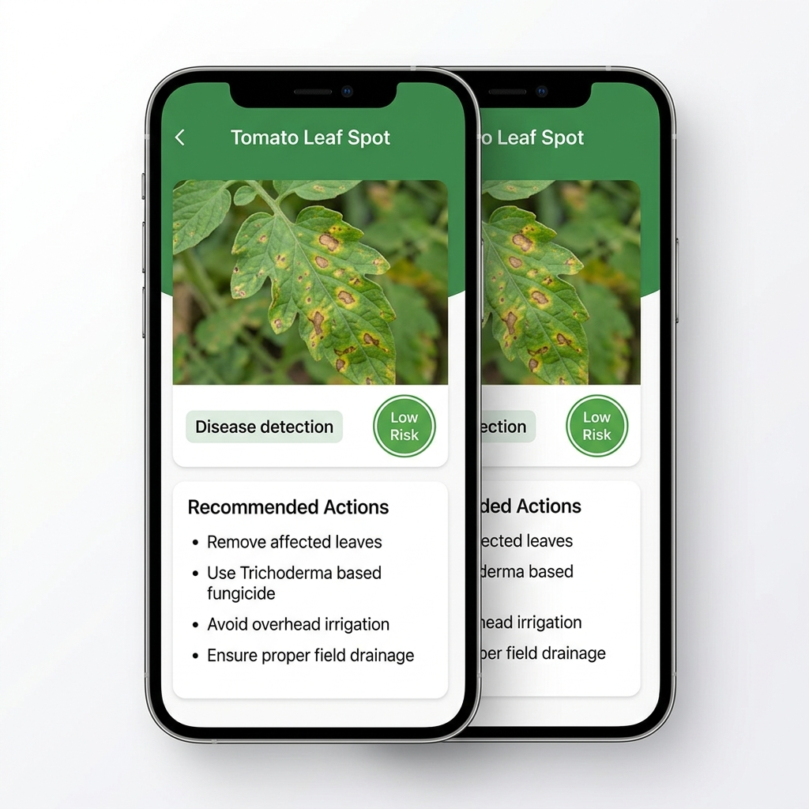

Scan & Detect
Upload image of affected plant part and detect diseases or pests.
Krishi Mitra (कृषि मित्र) भारत भर के किसानों के लिए मुफ़्त AI ऐप है। पत्ती की एक फोटो से फसल का रोग पहचानिए, खाद और इलाज की सलाह लीजिए, मौसम की चेतावनी और मंडी भाव देखिए — ज़्यादातर काम बिना इंटरनेट के।
Krishi Mitra (Krashi Mitra) is a free AI farming assistant for Indian farmers — detect crop disease from a leaf photo, get fertilizer advice, weather warnings and mandi prices, across all India.
Everything you need to protect your crops and grow better.
Upload image of affected plant part and detect diseases or pests.
Get AI-powered recommendations and treatment solutions.
Monitor your fields, keep records and track crop health.
Stay updated with weather forecast and important alerts.

Our advanced AI analyzes images and data to provide accurate insights and actionable advice in your language.
Try Now for FreeKrishi Mitra (कृषि मित्र) के बारे में जो सबसे ज़्यादा पूछा जाता है
Krishi Mitra (जिसे Krashi Mitra भी लिखा जाता है) एक मुफ़्त AI ऐप है जो भारत के किसानों की मदद करती है — पत्ती की फोटो से रोग पहचानना, खाद की सलाह, और मौसम की चेतावनी — सब अपनी भाषा में।
हाँ। Krishi Mitra पूरी तरह हिंदी में चलती है, और बंगाली, मराठी, तेलुगु, तमिल, गुजराती, कन्नड़, मलयालम, पंजाबी व ओड़िया में भी। सलाह बोलकर भी सुनाई जाती है, ताकि पढ़ना न आता हो तो भी काम चले।
हाँ, पूरी तरह मुफ़्त। कोई शुल्क नहीं, कोई सदस्यता नहीं, किसी सुविधा के लिए पैसे नहीं। मॉडल एक बार डाउनलोड करने में डेटा लगता है — उसके बाद जाँच आपके फ़ोन पर ही होती है और डेटा नहीं लगता।
किसान प्रभावित पत्ती की फोटो खींचता या चुनता है, और Krishi Mitra का AI उसे देखकर रोग बताता है और इलाज सुझाता है। ऐप पहले यह जाँचती है कि फोटो सच में उसी फसल की पत्ती की है — ताकि किसी और फोटो पर गलत रोग का नाम न आ जाए।
हाँ। एक बार वाई-फ़ाई पर अपनी फसल का मॉडल उतार लें, फिर रोग की जाँच, इलाज की सलाह, खाद का हिसाब, फसल कैलेंडर और आवाज़ — सब बिना इंटरनेट चलते हैं। सिर्फ़ मौसम, मंडी भाव, किसान चौपाल और ऑनलाइन दूसरी राय के लिए नेटवर्क चाहिए।
रोग पहचान कैसे काम करती है → खाद की सलाह कैसे बनती है → हिंदी आवाज़ सहायक →